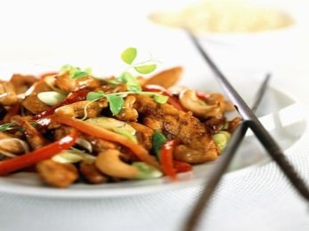

Poulet aux noix de cajou
Ingrédients
4×
- 2 échalotes
- 2 c. à s. d'huile
- 4 blancs de poulet
- 1 à 2 cas de farine
- 2 poignées de noix de cajou
- 1 c. à s. de sauce soja
- 1 c. à c. de sucre brun

Préparation
Étape 1
Émincer 2 échalotes et les dorer dans un peu des 2 c. à s. d'huile. Réserver.
Étape 2
Couper 4 blancs de poulet en cubes de 1cm et les fariner avec 1 à 2 cas de farine juste avant la cuisson.
Étape 3
Chauffer le reste d’huile et dorer le poulet jusqu’à cuisson complète.
Étape 4
Ajouter 2 poignées de noix de cajou et les échalotes, arroser de 1 c. à s. de sauce soja et ajouter 1 c. à c. de sucre brun. Laisser réduire en remuant.
Résumé
2 échalotes
2 c. à s. d'huile
Émincer dorer
4 blancs de poulet
1 à 2 cas de farine
fariner
dorer
2 poignées de noix de cajou
1 c. à s. de sauce soja
1 c. à c. de sucre brun
Laisser réduire